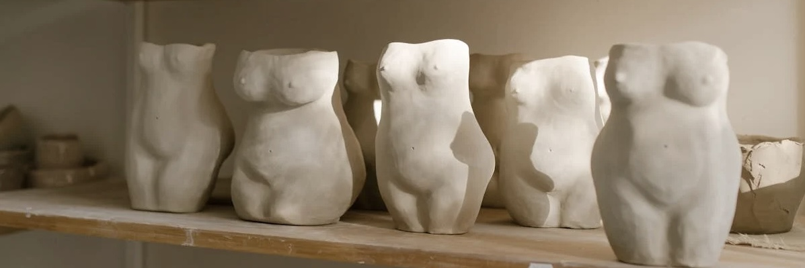
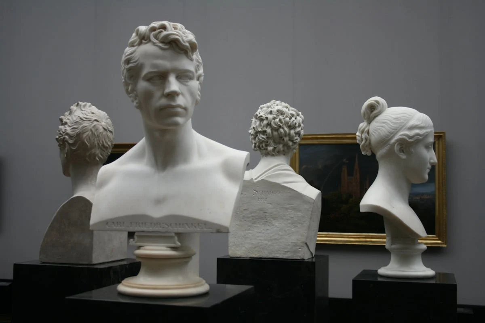
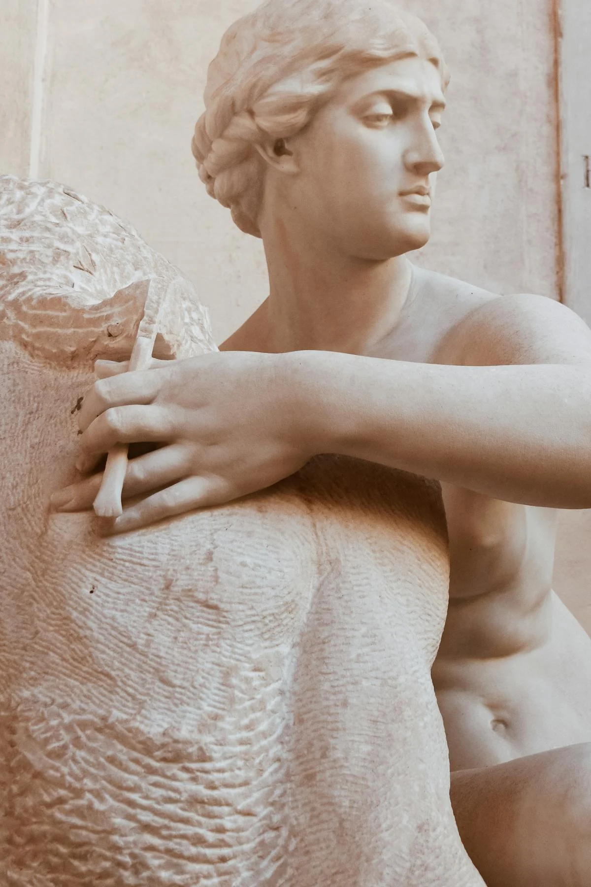
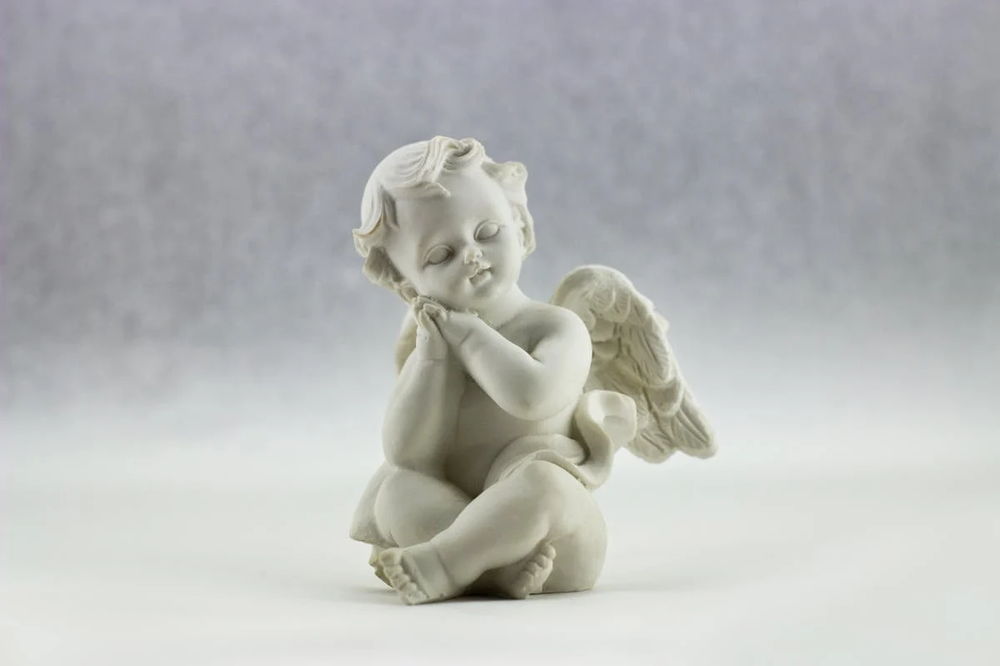
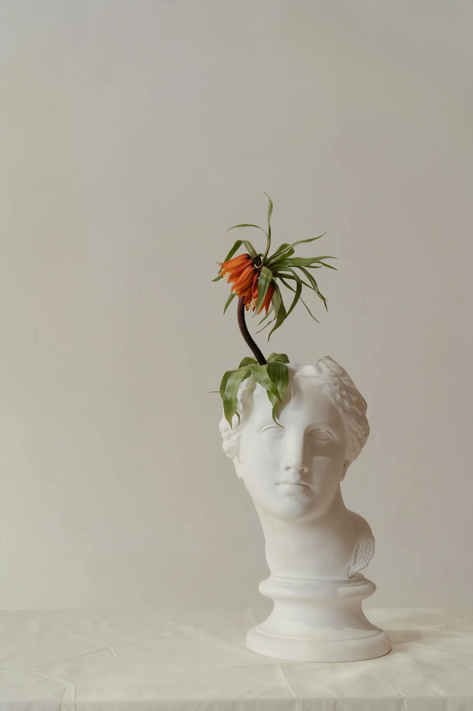
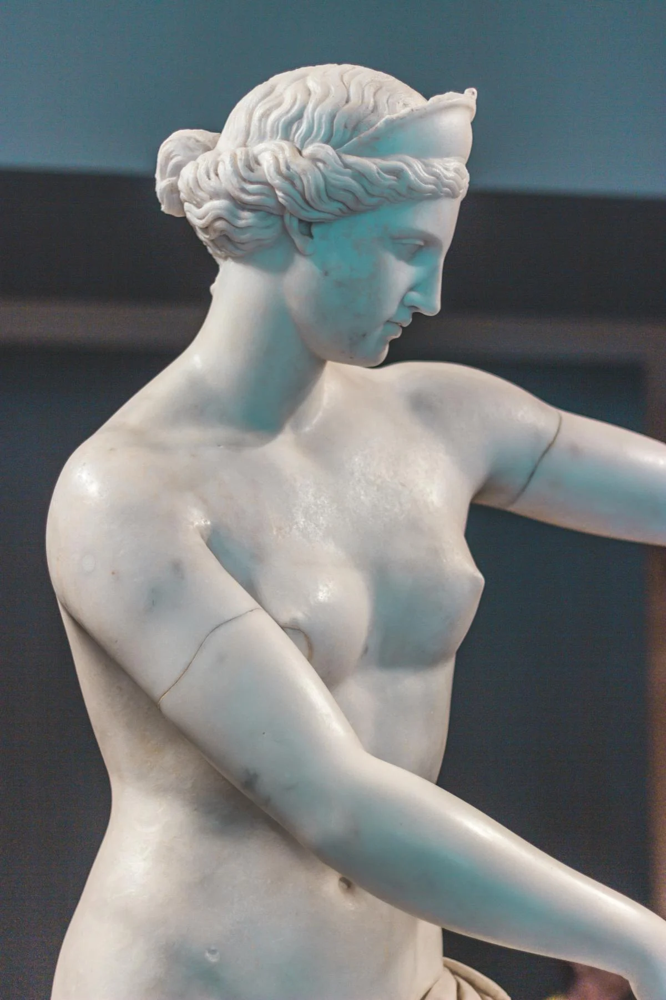
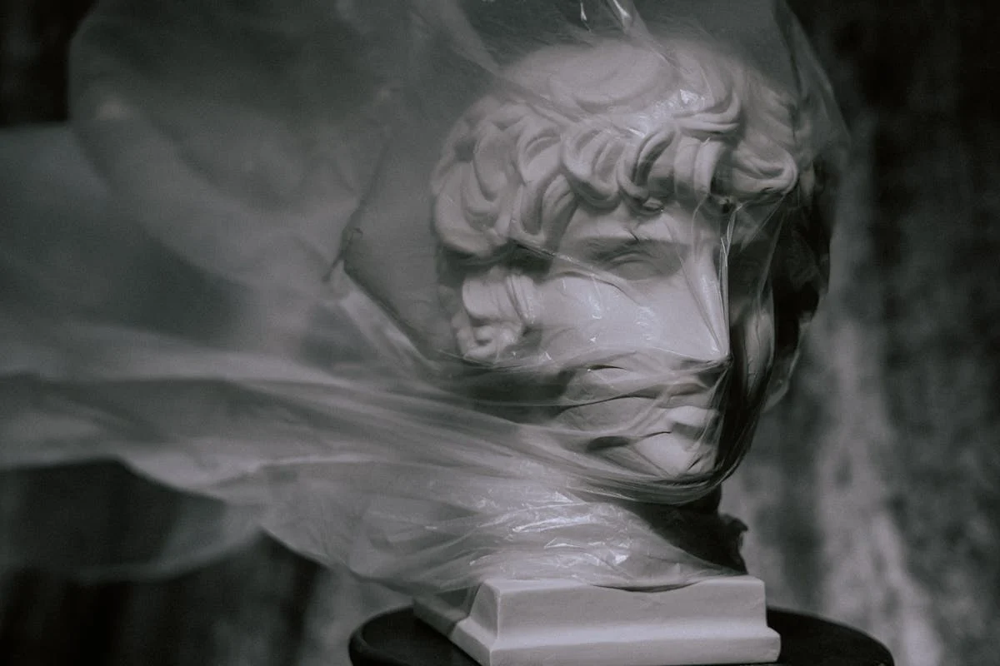
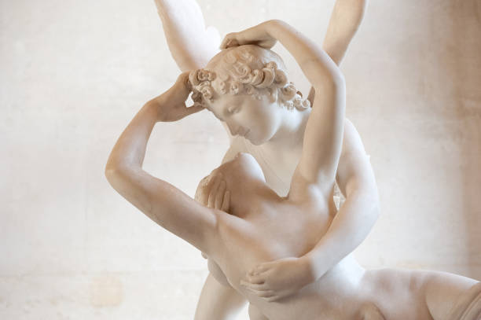
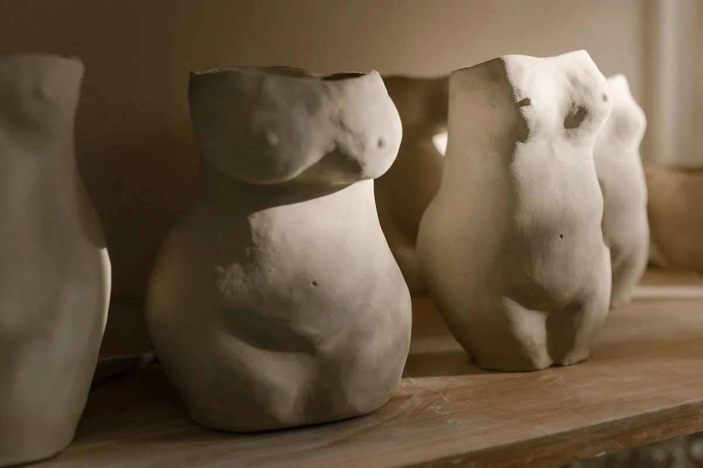
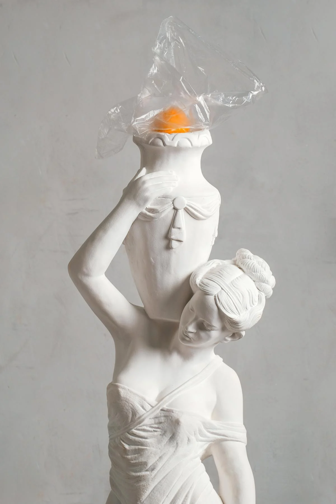

Découvrez les œuvres originales d'une sélection d’artistes axés sur l’humanisme. Ce sont les anatomies humaines qui sont mises en avant à travers l’art de la sculpture. Provenant du 14e au 17e siècle, nos sculptures s’inspirent de la Renaissance ainsi que de l’étude de l’Antiquité greco-romaine. Nos valeurs sont simples : la diversité, l’inclusion et la qualité. Ce sont trois éléments importants pour chacune des œuvres représentées par la galerie.
La Galerie Art Live Experience offre un éventail de services
à but de faire rayonner les Arts Visuels du corps humain et
et tout ceci avec un service unique et passionné. Chaque exposition est soigneusement conçue pour mettre en lumière des perspectives uniques et des pratiques innovantes. Notre équipe passionnée travaille en étroite collaboration avec les artistes pour créer des expériences immersives qui touchent le cœur et l'esprit de nos visiteurs.
LA GALERIE








HISTOIRE
Nature Confinée
Le buste classique en marbre, portant un masque moderne, représente la période de restriction et d'adaptation. Les fleurs séchées qui jaillissent de sa tête incarnent le renouveau, la créativité et la capacité de l'humanité à s’épanouir même dans les moments les plus difficiles. Cette dualité entre l'ancien et le nouveau, la contrainte et la floraison, évoque un message d’espoir : malgré l'adversité, l'art et la vie trouvent toujours une voie pour renaître et s’épanouir.

Beauté Brute
Cette œuvre en terre cuite, capture la puissance et la vulnérabilité du corps humain. Avec ses formes brutes et imparfaites, elle met en lumière la beauté naturelle, en dehors des standards classiques de perfection. Chaque sculpture, façonnée à la main, est une célébration des courbes et des textures du corps féminin, inspirée par la matière même de la terre.

L'élégance du Fardeau
L’élégance du Fardeau est une représentation gracieuse d’une porteuse d’eau, capturant la délicatesse et la force dans un geste simple mais puissant. Avec un vase imposant posé sur sa tête et son corps finement sculpté, elle incarne la résilience et l’élégance face au poids des responsabilités. Le marbre pur donne une dimension intemporelle à cette figure, en faisant un hommage universel à la grâce féminine et à la beauté qui émerge de la force intérieure.